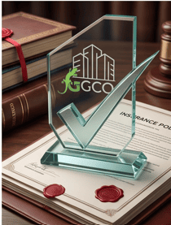

Especialistas en la administración ética y profesional de edificios. Nuestro equipo está liderado por administradores certificados por la Pontificia Universidad Católica de Chile (UC) y acreditados ante el Registro Nacional de Administradores (MINVU), garantizando excelencia operativa y vanguardia tecnológica.
Nuestras soluciones integrales están diseñadas para garantizar la eficiencia, seguridad y tranquilidad de su comunidad.

Gestión integral en ComunidadFeliz. Cobranza, remuneraciones y reportes financieros claros en tiempo real.

Actualización reglamentaria, asesoría legal y Plan de Emergencia visado por especialistas.

Supervisión rigurosa de infraestructura crítica con proveedores certificados (Ascensores, Bombas).

Evaluación e implementación de control de accesos (LPR, QR) y modernización de sistemas.

Supervisión semanal y atención directa para emergencias, asegurando una presencia constante.

Optimización de pólizas de áreas comunes y gestión eficiente de siniestros ante aseguradoras.
Un proceso estructurado para garantizar resultados medibles y transparencia desde el primer día en tu comunidad.

Realizamos un levantamiento completo del estado financiero, operativo, legal y de infraestructura del edificio para detectar urgencias.

Diseñamos un plan de acción con cronograma de mantenimiento preventivo y coordinamos a los proveedores certificados directamente.

Mantenemos al comité informado mediante reportes contables claros en ComunidadFeliz y visitas semanales de supervisión.
Trabajamos exclusivamente con empresas especialistas locales para garantizar la calidad y seguridad en el Biobío.
JGR, CONVAL, ROCA, TKE, FABRIMETAL.
ICM, Bombas Concepción, Emilio Yevenes.
ENER, Hidroclima, Climateq.
Lautaso SPA, Redsys, Home Security.
Nuestro compromiso es la transparencia y la confianza. Esto opinan comités y residentes de Concepción.
"Como presidenta del comité, trabajar con GCO ha sido un alivio tremendo. Nos apoyan y orientan en cada decisión, manteniendo siempre las cuentas claras. Pero lo que más valoro es su calidad humana; se preocupan genuinamente por el bienestar de nuestros trabajadores."
"La gestión de GCO ha sido impecable. Destaco especialmente el respeto y cuidado que tienen hacia el personal del edificio, asegurando que tengan buenas condiciones laborales, lo que se ha traducido en un servicio mucho mejor para toda nuestra comunidad."
"Desde que GCO tomó la administración, el cambio ha sido muy positivo para todo el equipo. Son súper ordenados con nuestros sueldos, nos entregan todas las herramientas de seguridad necesarias y siempre tienen las puertas abiertas para escucharnos. Nos sentimos muy respaldados."
"Se nota el orden. Los cobros de los gastos comunes llegan súper claros y siempre mantienen informada a la comunidad. Da gusto ver cómo trabajan en equipo con el comité y, sobre todo, cómo valoran y cuidan a nuestros conserjes, que son quienes nos cuidan."
"Un 7 la administración de GCO. Se nota que son un gran apoyo para el comité porque todo funciona mucho más ordenado que antes. Me gusta mucho que tienen un trato súper cercano y respetuoso con todo el personal del edificio; los trabajadores se ven más motivados."
"Como residente, me da mucha tranquilidad ver cómo apoyan a la directiva del edificio y mantienen todas las mantenciones al día. Además, marcan la diferencia en su trato con las personas: siempre se les ve preocupados por el bienestar del personal de aseo y conserjería."
Novedades clave sobre copropiedad, mantenimiento técnico y transparencia en el Gran Concepción.

16 DE SEPTIEMBRE, 2026
Integrar el comité no debe ser un segundo empleo no remunerado. Descubre qué exige la ley y cuándo el problema radica en tu administración...
Leer artículo
12 DE MAYO, 2026
Un desglose de los puntos clave sobre transparencia financiera y planes de emergencia que los comités de Concepción deben implementar hoy...
Leer artículo
15 DE MARZO, 2026
Es vital que tu comunidad revise las techumbres y canaletas de forma preventiva. Aquí te explicamos cómo planificar estos trabajos...
Leer artículoResolvemos las dudas clave sobre nuestra gestión certificada y la normativa vigente en el Gran Concepción.
Sí. Nuestro equipo directivo cuenta con certificación académica de la Pontificia Universidad Católica de Chile (UC) y cumple íntegramente con los requisitos legales vigentes bajo la Ley N° 21.442 y el Registro Nacional de Administradores del Ministerio de Vivienda y Urbanismo (MINVU).
Acompañamos al Comité de Administración en cada etapa legal: asesoría en la citación a asamblea o acuerdo de comité según su reglamento, levantamiento de acta de entrega, auditoría del estado financiero e infraestructura inicial, y migración ordenada a ComunidadFeliz sin interrumpir la operación del edificio.
Operamos con presencia en terreno en todo el Gran Concepción: Centro de Concepción, Barrio Universitario, Parque Ecuador, Lomas de San Andrés, Lomas de San Sebastián, San Pedro de la Paz (Andalué, Huertos Familiares, San Pedro del Valle), Talcahuano (Brisas del Sol), Chiguayante y Hualpén.
Trabajamos 100% integrados con la plataforma ComunidadFeliz. Cada copropietario y miembro del comité puede revisar desde su teléfono el respaldo digital de facturas, conciliaciones bancarias, estado de morosidad, pago de remuneraciones y fondos de reserva en tiempo real.